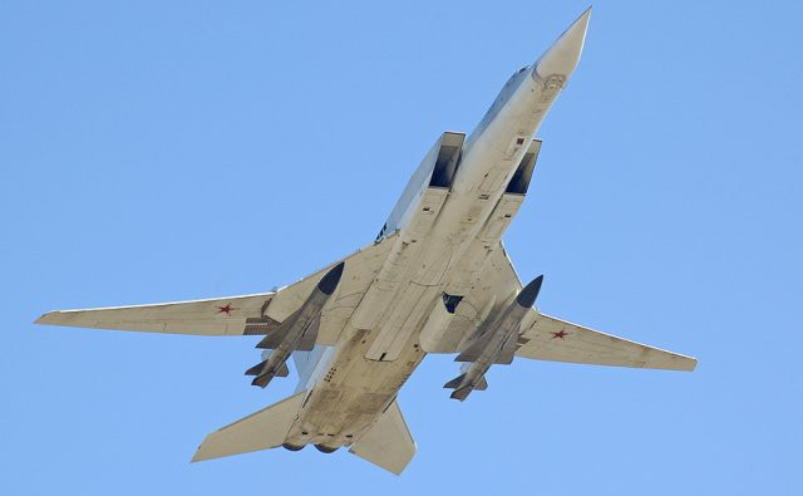
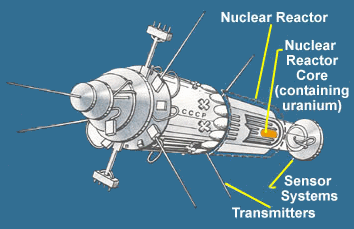
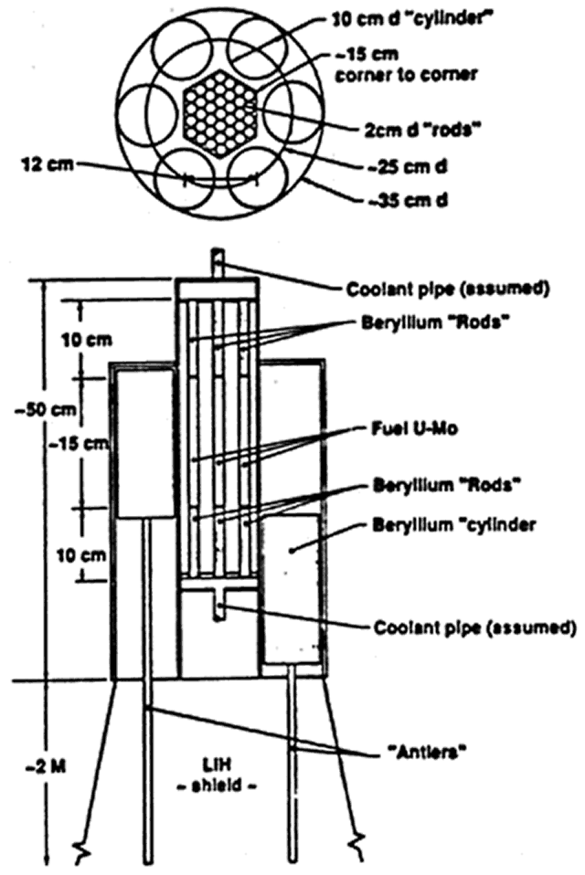
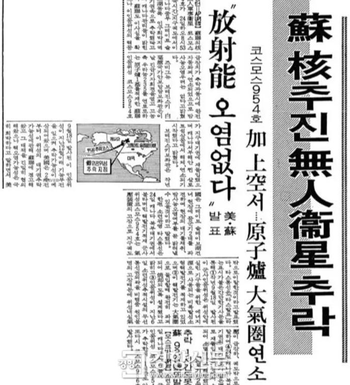
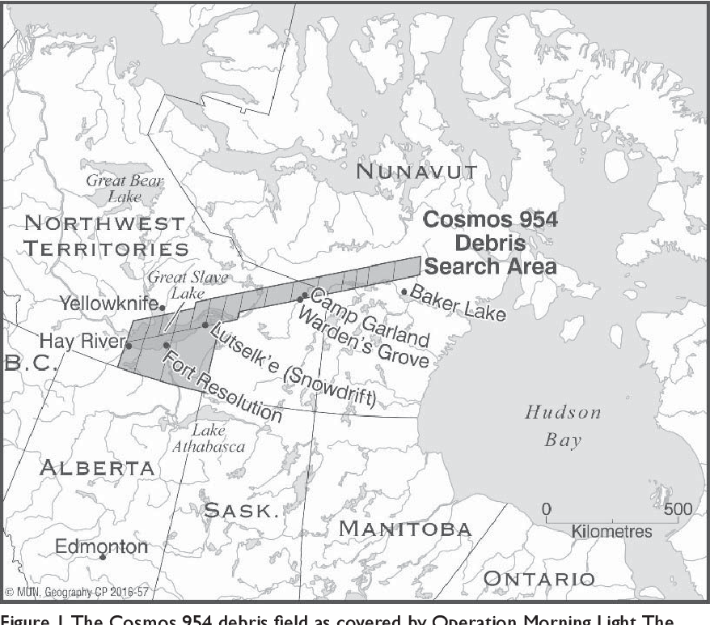
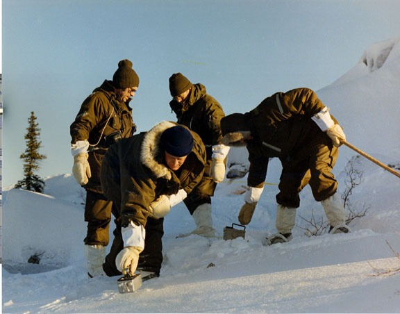
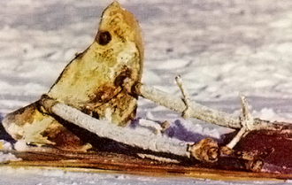
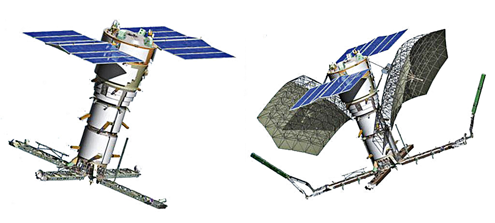

미해군 항모전단에 대한 소련 해군의 대응 - 우주전쟁
게시: 2022-06-30T06:30:17+09:00
<쏘련 해군의 기도와 응답> 나찌 패망 이후 미국과 세계를 양분하고 패권을 다투던 쏘련은 내심 큰일났다는 공포감에 사로잡힘. 무시무시한 미국과 패권을 다투기엔 자신들의 기술력과 물량이 너무 딸린다는 사실을 누구보다 잘 알고 있었기 때문. 특히 육군과 공군에서는 어느 정도 비벼볼 수 있었으나 세계 무대에서 경쟁하기에는 쏘련 해군은 지들이 보기에도 너무나 후짐. 그래서 쏘련은 일단 미해군과 정면 대결은 피하고 잠수함, 장거리 폭격기, 그리고 대함 미쓸 개발과 배치에 치중. 문제는 그럴 경우 별로 넓지도 않은 쏘련 영해에서 미해군과 어느 정도 싸워볼 만해졌으나, 대서양이나 태평양은 고사하고 공군 전투기들의 활동 범위를 벗어나는 북해 일대만 해도 항모를 앞세운 미해군에게 도저히 대적이 안됨. 장거리 폭격기로 그 갭을 메꾸려 했으나 F-14 톰캣들이 순찰을 도는 영공에 Tu-95 같은 폭격기만 달랑 집어넣자니 그야말로 가미가제 돌격에 불과. 승무원들이 죽는 것은 괜찮으나 쏘기 전에 당하는 것이 문제. 이 문제에 대한 해결책으로 쏘련 해군이 지목한 것은 장거리 대함미쓸. 그래서 역사적으로도 미해군은 대함 미쓸 연구개발에 심드렁한 반면 쏘해군은 죽어라 사거리 수백 km에 달하는 장거리 고성능 대함미쓸 개발을 주도. 항모 주변 수백km까지 물샐틈 없이 순찰을 도는 미해군 함재기들의 활동 범위 밖에서 쏘고 달아나기 위한 것. 가령 아래 사진 속 Tu-22 폭격기 날개에 달린 Kh-22 (NATO명 AS-4 Kitchen)은 이미 1962년에 실전 배치됨. (그런데 최근 우크라이나 목표물에도 이 미쓸이 발사되었다고...)

그러나 여기서 중대한 난관에 봉착. 사거리만 길면 뭐하나? 수백km 밖에 뭐가 어디에 있는지 보여야 쏘지? 이 문제에 대해 답을 못하던 쏘련해군은 열심히 해답을 갈구하며 기도. 그리고 그 기도에 대한 응답은 우주로부터 옴.
<미국을 능가하는 쏘련> 쏘련은 1965년부터 시작하여 1978년에는 공식적으로 Legenda라는 이름의 해군 신호정보 및 조준 시스템, 즉 스파이 위성을 실전 배치. 이 위성은 이론적으로 전세계 어느 곳에서든 대양의 미해군함들의 위치를 파악할 뿐만 아니라 대함 미쓸을 위한 조준까지 가능한 위치 정보를 제공. 레겐다는 전세계 최초의 해군용 스파이 위성 체계였고, 미국보다 앞선 몇 안 되는 쏘련의 기술적 승리. 레겐다 시스템은 2종류의 위성이 한 조를 이루었는데, US-A (사진1)는 레이더 정찰 위성이고 US-P는 SIGINT, 즉 신호정보 위성. US-P 위성은 군함들이 뿜어내는 레이더나 무선 등 각종 전파 정보를 포착하여 그 위치를 파악하는 것인데, 그걸로도 어느 정도 위치를 짐직할 수 있지만 그걸로 조준까지 하는 것은 무리. 그래서 US-P로 파악한 대략의 위치를 조준 수준의 위치 정보로 파악하기 위해 US-A, 즉 레이더 위성도 궤도에 올린 것. 이를 통해 쏘련은 두꺼운 구름을 뚫고, 또 밤의 어둠도 상관없이 미해군함들의 정확한 위치를 파악 가능. 심지어 일설에는 어느 정도 깊이의 바다물도 뚫고 잠수함 위치까지 파악 가능하다는 썰도 있었음. 이를 통해 쏘련 해군은 망망대해에서 안심하고 있는 미해군 항모에게 수백 km 밖에서 대함 미쓸을 쏠 수 있게 됨.

그러나 여기서 밀덕이라면 의아하게 생각할 문제가... 수백km 궤도 상에서 군함을 탐지할 정도로 강력한 레이더 빔을 쏘려면 엄청난 전기를 필요로 할 텐데 위성에 원자로라도 붙이지 않는 이상 그게 가능할 리가... 그러함. 상대는 냉전 시대의 쏘련. 정말 US-A 위성에는 초기엔 2 kWatt급, 후기에는 8 kWatt급 원자로를 붙여서 그 전력량을 감당했음. (사진2)

US-P 위성이 420–440 km 궤도에서 운용되는 것에 비해 US-A 위성은 비교적 낮은 궤도, 즉 250–270 km에서 운용되었음. 이는 아무리 원자로를 탑재했다고 하더라도 탐지 거리를 줄여 필요 전력량을 줄이기 위한 노력. 대신 한번에 감시할 수 있는 면적은 그만큼 줄어들었음. 그리고 원자로도 무궁무진한 에너지원은 아니었고, 강력한 레이더 빔은 무지막지한 전력을 필요로 함. 그래서 US-A의 서비스 수명은 고작 1,080 시간, 즉 45일 정도에 불과. 물론 24시간 계속 레이더 빔을 쏘아대지 않으면 그만큼 더 오래 쓸 수 있었고, 각종 업그레이드를 통해 1980년대 말에는 그런 위성의 수명을 90일 정도까지 확장. 하지만 45일이건 90일이건 이건 너무 짧은 수명. 이게 수명을 다한 뒤에는 어떻게 되는 거지? 폐원자로가 우리 머리 위를 떠다닌다고??
<쏘련제가 그러면 그렇지> 일단 US-A는 사실상 실패한 프로젝트. 1988년 3월 발사된 것을 마지막으로 추가 발사는 없었음. 지금은 모두 폐기된 상태. 이유는 서비스 수명이 너무 짧고, 핵폐기물 처리가 너무 위험했으며, 당시 전자기술로는 레이더 이미지 해상도가 너무 떨어져 개별 군함 추적은 불가능했고 미해군 항모 전단과 같은 큰 함대만 추적 가능했기 때문. 그리고 실제로 쏘련 핵위성은 문제를 일으킴. 쏘련애들도 완전 비양심은 아니었으므로 그걸 자연스럽게 지구에 떨군다는 것이 원래 의도는 아니었음. 짧은 수명을 다한 US-A 핵위성은 그 원자로를 분리시켜 소위 '폐기 궤도'(disposal orbit)인 800 km 상공 궤도로 밀어올림. 그러나 쏘련제도 영국제만큼은 아니었어도 고장이 자주 났고, 그 중 2개는 그 분리 과정 중에 문제를 일으켜 하나는 1983년 남대서양에, 다른 하나는 1978년 캐나다 북동부 Great Slave Lake 근처에 떨어짐. 이 사건은 소위 코스모스 위성 추락 사건으로, 아마 50대 이상 되시는 분들은 당시 우리나라에서도 '혹시 한반도에 떨어질 수도'라며 온나라가 떠들썩했던 것 기억하실 것. (사진1, 2)
 
당시 난데없이 핵폐기물 덤탱이를 뒤집어 쓴 캐나다 정부는 Operation Morning Light라는 이름으로 몇 년간에 걸친 핵폐기물 청소 작업을 해야 했는데, 대부분의 폐핵연료는 추락과정에서 대기 중에 분산되었고 수거된 것은 전체의 1%에 불과. 청소 구역은 12만4천 평방 km였고, 결국 12개의 큰 파편을 수거. 그 중 10개가 방사능을 띠고 있었고 그 중 하나는 몇 시간 동안 접촉할 경우 사람을 죽일 수 있는 정도의 방사능을 띠고 있었다고. (사진3, 4)
 
캐나다 정부는 청소 비용으로 쏘련에 600만 캐나다달러를 청구. 쏘련도 완전 비양심은 아니라서 실제로 300만 캐나다달러를 지불. 비록 이렇게 Legenda 시스템은 망했고, 쏘련까지 함께 망해버렸지만 우주 궤도에 떠있는 레이더 위성 개발은 지금도 계속 되고 있음. 미국은 Lacrosse, 러시아는 정찰 위성 Liana 시스템의 일환으로 Pion-NKS라는 이름의 레이더 위성 계속 개발 및 발사 중. 이젠 태양전지를 전원으로 쓴다고.
